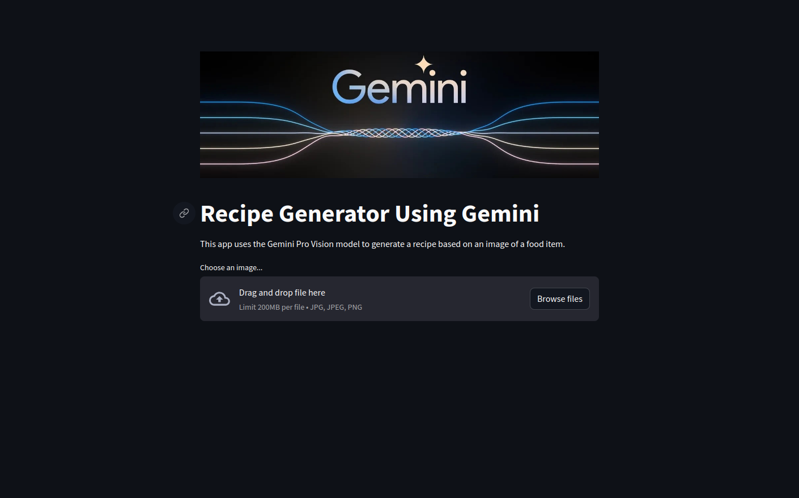

Hey there!
In this codelab, you'll build a fun and practical Streamlit app that generates recipes based on food images! By leveraging the power of Google's Gemini Pro Vision model, you'll be able to:

In order to follow this codelab, you'll need the following:
API KEY.python3 -m venv venv
source venv/bin/activate
pip install streamlit google-generativeai
import streamlit as st
from PIL import Image
import textwrap
import google.generativeai as genai
import io
import os
configure_google_apiReplace yourapikey with your actual API key.
def configure_google_api():
genai.configure(api_key="yourapikey") # Replace with your actual API key
generation_config = {
"temperature": 0.9,
"top_p": 0.95,
"top_k": 40,
"max_output_tokens": 1024,
}
We also need to configure the security settings for the model output:
safety_settings = [
{"category": "HARM_CATEGORY_HARASSMENT", "threshold": "BLOCK_MEDIUM_AND_ABOVE"},
{"category": "HARM_CATEGORY_HATE_SPEECH", "threshold": "BLOCK_MEDIUM_AND_ABOVE"},
{"category": "HARM_CATEGORY_SEXUALLY_EXPLICIT", "threshold": "BLOCK_MEDIUM_AND_ABOVE"},
{"category": "HARM_CATEGORY_DANGEROUS_CONTENT", "threshold": "BLOCK_MEDIUM_AND_ABOVE"},
]
model = genai.GenerativeModel(model_name="gemini-pro-vision",
generation_config=generation_config,
safety_settings=safety_settings)
return model
This code configures the text generation model ("gemini-pro-vision") with safety checks. It first sets up the API key and adjusts settings for creative control and output length. It then defines safety thresholds for harmful content. Finally, it creates the model and returns it for use.
Now, we process tha image to to return a text response. Create a function process_image
def process_image(image_bytes):
model = configure_google_api()
image_parts = [{
"mime_type": "image/jpeg",
"data": image_bytes
}]
prompt_parts = [
"Accurately identify the food item in the image and provide an appropriate and recipe consistent with your analysis. Give traditional methods of cooking for the given food item. ",
image_parts[0],
" \n",
]
response = model.generate_content(prompt_parts)
return response.text
The code takes an image as input and identifies the food item in it. It then uses a text generation model to provide a recipe and traditional cooking methods for that food item. The details of this process involve:
This function effectively combines image analysis and text generation for recipe recommendations based on an image.
streamlit: Now that we have the model
configured let's create a simple UI in order to interact with it. Create a main function.
def main():
st.set_page_config(page_title="Recipe Generator",page_icon=':star:')
st.title('Recipe Generator Using Gemini')
st.write("This app uses the Gemini Pro Vision model to generate a recipe based on an image of a food item.")
uploaded_file = st.file_uploader("Choose an image...", type=["jpg", "jpeg", "png"])
This code creates a basic web page with a title, description and input filed.
buf = io.BytesIO()
image.save(buf, format='JPEG')
byte_im = buf.getvalue()
process_image function
written earlier.try:
result_text = process_image(byte_im)
st.markdown(textwrap.indent(result_text, '> ', predicate=lambda _: True))
except Exception as e:
st.error(f"Error processing image: {e}")
main function: Define entrypoint of
the application by calling the main function.if __name__ == "__main__":
main()
import streamlit as st
from PIL import Image
import textwrap
import google.generativeai as genai
import io
import os
def configure_google_api():
genai.configure(api_key="yourapikey") # Replace with your actual API key
generation_config = {
"temperature": 0.9,
"top_p": 0.95,
"top_k": 40,
"max_output_tokens": 1024,
}
safety_settings = [
{"category": "HARM_CATEGORY_HARASSMENT", "threshold": "BLOCK_MEDIUM_AND_ABOVE"},
{"category": "HARM_CATEGORY_HATE_SPEECH", "threshold": "BLOCK_MEDIUM_AND_ABOVE"},
{"category": "HARM_CATEGORY_SEXUALLY_EXPLICIT", "threshold": "BLOCK_MEDIUM_AND_ABOVE"},
{"category": "HARM_CATEGORY_DANGEROUS_CONTENT", "threshold": "BLOCK_MEDIUM_AND_ABOVE"},
]
model = genai.GenerativeModel(model_name="gemini-pro-vision",
generation_config=generation_config,
safety_settings=safety_settings)
return model
# Function to process the image and get the model response
def process_image(image_bytes):
model = configure_google_api()
image_parts = [{
"mime_type": "image/jpeg",
"data": image_bytes
}]
prompt_parts = [
"Accurately identify the food item in the image and provide an appropriate and recipe consistent with your analysis. Give traditional methods of cooking for the given food item. ",
image_parts[0],
" \n",
]
response = model.generate_content(prompt_parts)
return response.text
def main():
st.set_page_config(page_title="Recipe Generator",page_icon=':star:')
st.image('gemini.webp', use_column_width=True)
st.title('Recipe Generator Using Gemini')
st.write("This app uses the Gemini Pro Vision model to generate a recipe based on an image of a food item.")
uploaded_file = st.file_uploader("Choose an image...", type=["jpg", "jpeg", "png"])
if uploaded_file is not None:
image = Image.open(uploaded_file)
st.image(image, caption='Uploaded Image', use_column_width=True)
st.write("")
st.write("Identifying...")
# Convert PIL image to bytes for processing
buf = io.BytesIO()
image.save(buf, format='JPEG')
byte_im = buf.getvalue()
# Get model response
try:
result_text = process_image(byte_im)
st.markdown(textwrap.indent(result_text, '> ', predicate=lambda _: True))
except Exception as e:
st.error(f"Error processing image: {e}")
if __name__ == "__main__":
main()
streamlit run app.py
Congratulations! You've just built a software powered by Google's Gemini AI! This app takes an input of food item image and responds with the recipe. You can try cooking some amazing meals!